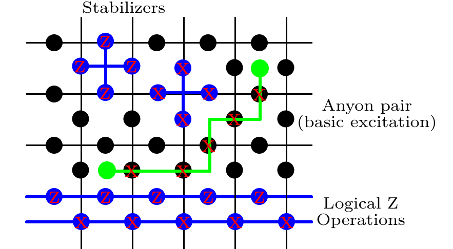

Stabilizer Codes (I)
Stabilizer codes were developed to correct the errors that occur in many qubit systems.
Pauli Group
On \(1\) qubit the Pauli group \(G_1\) is defined as
\[ G_1 \equiv \left\{ \pm I, \pm iI, \pm X, \pm i X, \pm Y, \pm i Y, \pm Z, \pm i Z \right\} \] which is generated by the products of Pauli matrices with the factors \(\pm1\) and \(\pm i\). These matrices form a group under the operation of matrix multiplication. The factors \(\pm1\) and \(\pm i\) are included to ensure that \(G_1\) is closed under multiplication.
On \(n\) qubits, the Pauli group \(G_n\) is defined as \[ G_n \equiv \left\{ i^k \prod_n X_n^{a_n} Z_n^{b_n} \right\} \] here \(k\), \(a_n\) and \(b_n\) are all arbitrary integers. Therefore, the group \(G_n\) consists of all \(n\)-fold tensor products of Pauli matrices, with the factors \(\pm 1\) or \(\pm i\).
Stabilizer
Definition. Suppose \(S\) is a subgroup of \(G_n\), define \(V_S\) to be the vector space \[ V_S = \left\{ |\psi\rangle \ | \ \hat{g}|\psi\rangle = |\psi\rangle, \quad \forall \hat{g} \in S \right\} \] We say that an operator fixes the state if the state is an eigenket with eigenvalue \(+1\) for this operator. So we call \(V_S\) the vector space stabilized by \(S\), and \(S\) is said to be the stabilizer of the space \(V_S\).
Non-trivial \(V_S\). The conditions to construct a non-trivial \(V_S\) (at least contains a non-zero vector) :
- \(-I\) should not be an element of \(S\), because the only solution to \((-I)|\psi\rangle=|\psi\rangle\) is \(|\psi\rangle=0\).
- The elements of \(S\) should be commute with each other. The Pauli matrices all commute or anti-commute with one another. If the elements \(M\) and \(N\) of \(S\) anti-commute, then we have \(-NM=MN\) and \(MN|\psi\rangle = |\psi\rangle =-NM|\psi\rangle=-|\psi\rangle\), which implies that \(|\psi\rangle\) is the zero vector.
Properties of stabilizer.
- \(S\) is an Abelian group, because all the elements \(\hat{g}\) commute with each other.
Example 1. The Bell state can be written as \(|\psi\rangle=(|00\rangle+|11\rangle)/\sqrt 2\). It can be easily shown that \(X_1X_2|\psi\rangle=|\psi\rangle\) and \(Z_1Z_2 |\psi\rangle=|\psi\rangle\). Therefore the Bell state is stabilized by \(S=\left\{ X_1X_2,Z_1Z_2 \right\}\).
Example 2. We show a simple example with \(n=3\) qubits, the stabilizer is taken as \[S \equiv \left\{ I, Z_1Z_2, Z_2Z_3, Z_1Z_3 \right\}\] * The subspace fixed by \(Z_1Z_2\) is spanned by \(|000\rangle\), \(|001\rangle\) \(|110\rangle\) and \(|111\rangle\). * The subspace fixed by \(Z_2Z_3\) is spanned by \(|000\rangle\), \(|100\rangle\) \(|011\rangle\) and \(|111\rangle\). * The subspace fixed by \(Z_1Z_3\) is spanned by \(|000\rangle\), \(|010\rangle\) \(|101\rangle\) and \(|111\rangle\). Note that the elements \(|000\rangle\) and \(|111\rangle\) are common to both these lists. So \(V_S\) is the subspace spanned by the states \(|000\rangle\) and \(|111\rangle\). Actually, the generators of this group is \(S=\langle Z_1Z_2,Z_2Z_3 \rangle\) because \(Z_1Z_3=(Z_1Z_2)(Z_2Z_3)\) and \(I=(Z_1Z_2)^2\). ()
- Actually, many quantum states can be more easily described by the operators (stabilizer code) than the state itself.
Surface Code
The surface codes are a family of quantum error correcting codes defined on a 2D lattice of qubits. The members of the surface code family are sometimes also described by more specific names: The toric code is a surface code with periodic boundary conditions, the planar code is one defined on a plane, etc. The term ‘surface code’ is sometimes also used interchangeably with ‘planar code’, since this is the most realistic example of the surface code family.
Toric code
|  |
|---|
| Toric code Hamiltonian |
The toric code is a topological quantum error correcting code, and an example of a stabilizer code, which is proposed by Kitaev. Consider a set of spin-\(1/2\) "spins" on the middle of the links of a square lattice, with the Hamiltonian \[ H_\text{TC} = -K\sum_v A_v - K' \sum_p B_p \] where the sums are over plaquettes \(p\) and vertex \(v\). The plaquette operator \(B_p=\prod_{i\in p} \sigma_i^z\) is a product over the spins on the bonds surrounding the plaquette \(p\), and the “star” operator \(A_p=\prod_{i\in v} \sigma_i^x\) is a product over the spins on bonds neighboring the vertex \(v\), as shown in the above figure.
- All the \(A\) and \(B\) operators commute with each other. So the ground states are simply those states for which \(A_v = B_p = +1\) for every star and plaquette.
- Topological degeneracy: For a lattice of \(N\) sites with periodic boundary conditions, there are \(N-1\) independent choices of star eigenvalues, and \(N − 1\) independent choices of plaquette eigenvalues. Consequently, there are \(2^{2N−2}\) specifications of eigenvalues, but there are a total of \(2^{2N}\) spin states. So each particular choice of \(\{A_v,B_p\}\) is four-fold degenerate on the torus.
Then we discuss how this toric code model is related to the stabilizer. * Codespace: We know the ground state \(|G\rangle\) satisfies \[ \forall v,\ A_v|G\rangle=+|G\rangle,\qquad \forall p,\ B_p|G\rangle=+|G\rangle. \] This defines the codespace of the code. The \(N^2\) terms \(A_v\) and \(B_p\) are refered as stabilizers. The stabilizers define the ground states that have a Hilbert space of dimension \(4\), then this system could encode two qubits. * Logical qubit : * Pauli matries act on logical qubit :
The Planar Code
The details are basically identical to the Toric code, except that the boundary conditions of the lattice are open instead of periodic. This means that the stabilizers at the edges are defined slightly differently. In this case, there is only one logical qubit in the code instead of two.